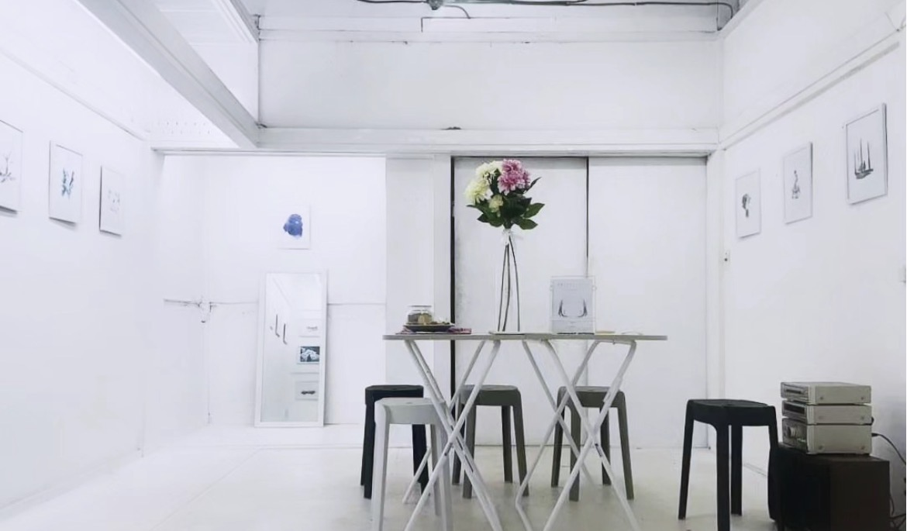

REFLECT|ON
PUNIO Gallery · Tokyo, Japan
REFLECT|ON brought Knysh Ksenya’s watercolor works to PUNIO Gallery in Tokyo in collaboration with Mey Amisa. The sequence moves from the quiet exhibition space into Ksenya’s watercolor language, then into Mey Amisa’s words and editorial compositions, where image and text become one continuous reflection.
Exhibition Space
Tokyo · PUNIO Gallery
The art of Knysh Ksenya
Watercolor illustrations
The art of Mey Amisa
Words · editorial composition